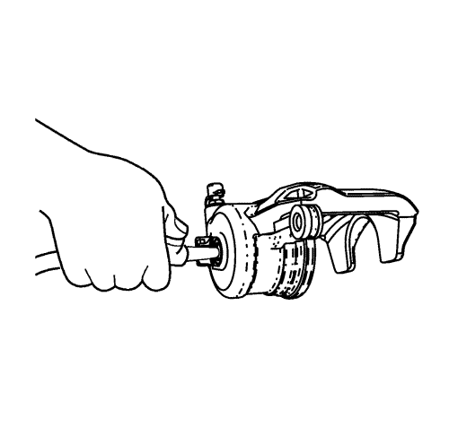
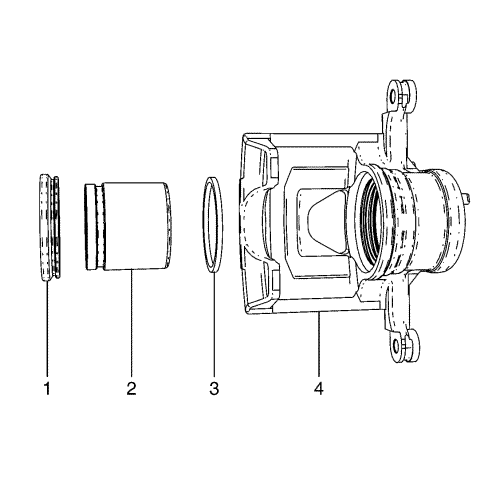
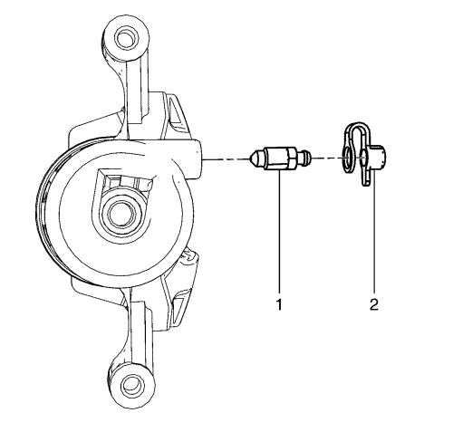
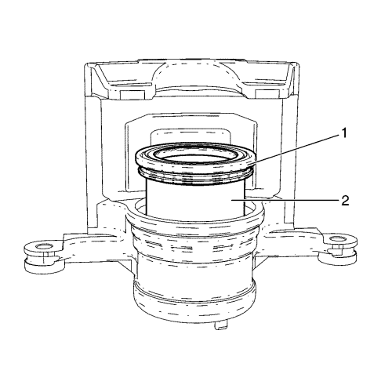

Revisión de la pinza del freno delantero
Advertencia: Consulte Advertencia relacionada con el polvo procedente de los frenos en la sección Prólogo
Advertencia: Consulte Advertencia de líquido de frenos irritante en la sección Prólogo
Procedimiento de desmontaje

- Desmonte la pinza del freno del vehículo. Consultar Sustitución de la pinza del freno delantero .
- Desmonte el pistón de la pinza de freno, del interior de la pinza de freno, inyectando aire comprimido de baja presión en el interior de la pinza de freno, a través del orificio de entrada del liquido de freno.

- Desmonte la junta del guardapolvo del pistón (1), del asiento de la junta en la pinza de freno (4). Deseche la junta de la funda.
- Utilizando una herramienta pequeña de madera o de plástico, desmonte la junta del pistón (4) del orificio de la pinza. Deseche la junta del pistón.

- Desmonte la tapa de la válvula de purga del freno (2).
- Desmonte la válvula de purga del freno (1).
Nota: No utilice productos abrasivos para limpiar el pistón de la pinza de freno.
- Inspeccione el interior de la pinza de freno para ver si presenta grietas, arañazos, picaduras, demasiado óxido, y/o corrosión excesiva.
- Limpie el orificio del pistón de la pinza de freno, el orificio escariado de la junta y el pistón de la pinza con alcohol desnaturalizado o algún producto equivalente.
- Seque el orificio y el orificio escariado del pistón de la pinza de freno y el pistón con aire comprimido filtrado, no lubricado.
- Si el orificio de la pinza tiene óxido o corrosión ligeros, intente retirar la imperfección con papel de lija fino. Si no se puede retirar la imperfección, sustituya el conjunto de la pinza.
- Si hay roturas, estrías, picaduras, óxido excesivo y/o corrosión excesiva en el orificio de la pinza, sustituya el conjunto de la pinza.
- Inspeccione el pistón de la pinza por si hubiera roturas, estrías, y/o daño al chapado. Si observa alguno de estos problemas, sustituya el pistón de la pinza.
Procedimiento de montaje
- Lubrique la nueva junta del pistón (3) con líquido de frenos procedente de una botella de líquido de frenos limpia y sellada. Consulte Especificaciones del sistema de frenos para el líquido de frenos recomendado.
- Monte la nueva junta de pistón lubricada (3) en el orificio de la pinza.
- Aplique una capa delgada de líquido de frenos, procedente de una botella de líquido de frenos limpia y sellada, sobre la superficie exterior del pistón de la pinza de freno (2). Consulte Especificaciones del sistema de frenos para el líquido de frenos recomendado
- Monte la mitad inferior del pistón de la pinza (2) en el orificio de la pinza.

- Monte la nueva junta de guardapolvo del pistón (1) sobre el pistón de la pinza (2).
- Comprima el pistón de la pinza (2) hasta el fondo del orificio de la pinza.
- Encaje bien la junta del guardapolvo del pistón (1) en el asiento de la junta, en el interior de la pinza de freno.
Precaución: Consulte Precaución con las fijaciones en la sección Prólogo
- Monte la válvula de purga de freno (1) en la pinza de freno, y apriétela a 8,5 N·m (75 lb pulg.).
- Monte la tapa de la válvula de purga del freno (1).
- Monte la pinza de freno en el vehículo. Consultar Sustitución de la pinza del freno delantero .
| © Copyright Chevrolet. Reservados todos los derechos |